1과목: 발달심리
1. 발달에 관한 설명으로 옳은 것을 모두 고른 것은?
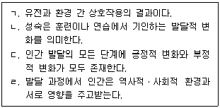
2. 발달연구방법에 관한 설명으로 옳은 것은?
3. 발달 이론가와 그의 주장이 올바르게 짝지어진 것이 아닌 것은?
4. 피아제(J. Piaget)가 제시한 전조작기 발달 특성으로 옳은 것을 모두 고른 것은?
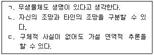
5. 다음 ( )에 해당하는 개념은?
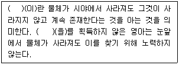
6. 다음 설명에 해당하는 애착의 유형은?
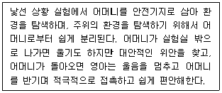
7. 다음 사례에 해당하는 언어 발달 특징으로 옳은 것은?
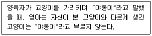
8. 아동기의 인지 발달특징으로 옳은 것은?
9. 청소년기 인지 발달특징에 관한 설명으로 옳은 것을 모두 고른 것은?
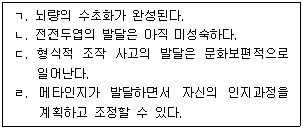
10. 청소년기 발달에 관한 발달 이론가의 주장으로 옳은 것은?
11. 다음에 해당하는 발테스(P. Baltes)의 성공적 노화의 요인은?
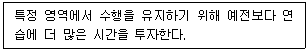
12. 노년기 발달특징에 관한 설명으로 옳은 것을 모두 고른 것은?
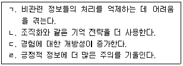
13. 전생애 발달적 조망에서 발달에 미치는 영향요인에 관한 설명으로 옳은 것은?
14. 다음에 해당하는 성염색체 이상 증후군은?
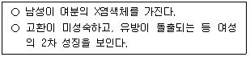
15. 태내발달에 관한 설명으로 옳지 않은 것은?
16. 다음 사례에 해당하는 신생아의 반사행동은?
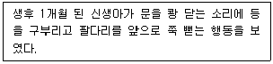
17. 소근육 운동 발달 순서를 옳게 나열한 것은?
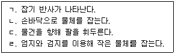
18. 지능에 관한 설명으로 옳은 것을 모두 고른 것은?
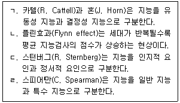
19. 다음 A의 행동을 설명하는 발달 이론은?
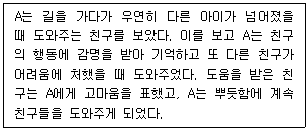
20. 콜버그(L. Kohlberg)의 이론으로 A, B, C가 획득한 성 역할 발달특성을 옳게 분석한 것은?
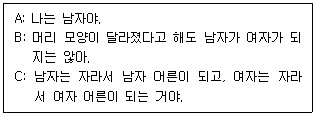
21. 공격성 발달에 관한 설명으로 옳지 않은 것은?
22. 콜버그(L. Kohlberg)의 도덕성 발달단계 중 '가' 단계에 관한 설명으로 옳은 것은?
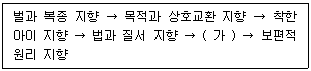
23. 정서 발달에 관한 설명으로 옳지 않은 것은?
24. DSM-5에서 품행장애의 진단기준에 해당하지 않는 것은?
25. DSM-5의 신경발달장애 중 투렛장애 진단기준으로 옳지 않은 것은?
2과목: 집단상담의 기초
26. 집단상담에 관한 설명으로 옳지 않은 것은?
27. 집단상담 유형에 관한 설명으로 옳지 않은 것은?
28. 집단상담기술에 관한 설명으로 옳은 것을 모두 고른 것은?
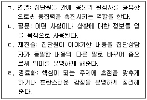
29. 집단상담 평가에 관한 설명으로 옳지 않은 것은?
30. 집단상담자의 윤리적 행동으로 옳은 것을 모두 고른 것은?
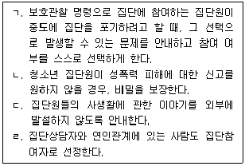
31. 합리적정서행동치료(REBT)의 ABCDE 모형을 순서대로 옳게 나열한 것은?
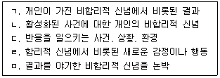
32. 해결중심 집단상담에서 집단원에게 하는 주요 질문기법으로 옳지 않은 것은?
33. 집단상담 이론과 목표에 관한 설명으로 옳은 것은?
34. 집단상담 이론에 관한 설명으로 옳은 것을 모두 고른 것은?
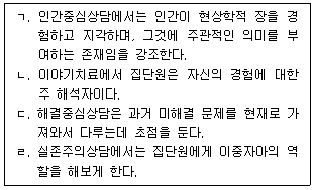
35. 집단상담의 이론과 기법의 연결로 옳은 것은?
36. 다음에서 사용되는 방어 기제에 관한 설명으로 옳은 것은?
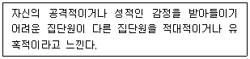
37. 심리극 집단상담 단계에 관한 설명으로 옳지 않은 것은?
38. 집단역동에 관한 설명으로 옳지 않은 것은?
39. 집단역동 중 개인 내적 역동을 파악하기 위한 내용으로 옳은 것을 모두 고른 것은?
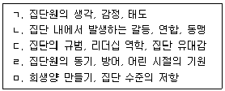
40. 코리(G. Corey)의 집단발달단계 중 초기단계에서 집단상담자의 역할로 옳지 않은 것은?
41. 코리(G. Corey)의 집단상담 과도기 단계의 특징으로 옳은 것을 모두 고른 것은?
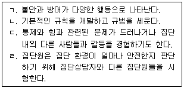
42. 집단발달단계에 따른 특징을 순서대로 옳게 나열한 것은?
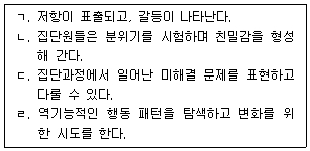
43. 집단상담의 종결단계에 관한 설명으로 옳지 않은 것은?
44. 학교에서 이루어지는 청소년 집단상담에 관한 설명으로 옳은 것을 모두 고른 것은?
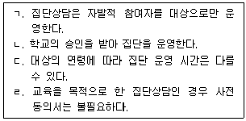
45. 청소년상담사 윤리강령에 근거하여 집단상담을 진행할 때 '사전 동의'에 관한 설명으로 옳지 않은 것은?
46. 청소년 집단상담을 초기, 중기, 종결기로 나누었을 때 종결기의 효과적인 개입전략은?
47. 청소년 집단상담에서 집단원 선정 시 제외해야 할 대상으로 옳은 것은?
48. 청소년 집단상담에서 밑줄 친 부분의 집단상담자 반응 기술로 옳은 것은?
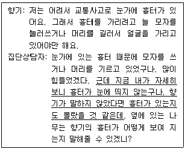
49. 다음 집단원에 대한 청소년 집단상담자의 공감반응으로 옳은 것은?
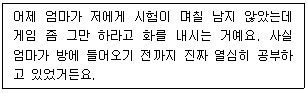
50. 청소년 집단상담의 기법과 효과의 연결로 옳지 않은 것은?
3과목: 심리측정 및 평가
51. 정규화된 표준화 점수인 T점수에서 평균(M)과 표준편차(SD)는?
52. 의미변별척도의 단점으로 옳지 않은 것은?
53. 통계에 관한 설명으로 옳지 않은 것은?
54. 문항반응이론의 기본가정에 관한 설명으로 옳지 않은 것은?
55. 검사문항 간(inter-item) 정답과 오답의 일관성을 종합적으로 측정하는 상관계수는?
56. 신뢰도에 영향을 주는 요인에 관한 설명으로 옳지 않은 것은?
57. 문항반응이론에서 문항별 능력추정치(ability estimate)에 해당하는 것을 모두 고른 것은?
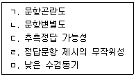
58. 다음 내용에서 설명하는 타당도는?
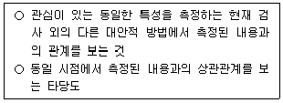
59. 분류기준상 학업성취도 검사가 해당되는 유형은?
60. 검사자를 문제해결의 권위자로 인식시키고, 수검자를 검사자에게 의존하게 만든다고 비판하면서 심리검사를 반대했던 연구자는?
61. 심리검사 및 평가의 윤리에 관한 설명으로 옳은 것은?
62. 수검자나 수검자의 법적 대리인으로부터 '동의'가 필요하지 않은 경우를 모두 고른 것은?
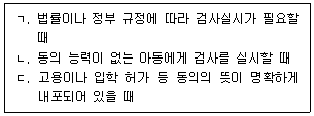
63. K-WAIS-IV에 관한 설명으로 옳은 것을 모두 고른 것은?
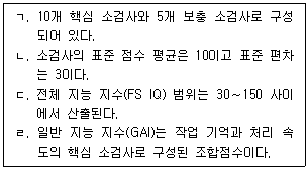
64. K-WISC-IV와 K-WISC-V에 관한 설명으로 옳지 않은 것은?
65. K-WAIS-IV의 숫자(digit span) 소검사가 측정하는 것을 모두 고른 것은?
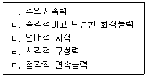
66. 지능에 관한 개념과 이론에 관한 설명으로 옳지 않은 것은?
67. 벤더 도형 검사(BGT)의 정신병리 채점에서 형태의 일탈(변화)에 포함되는 것은?
68. MMPI-2에서 임상척도 2번(D)이 70점 이상 상승(다른 임상척도는 60점 이하)할 때 임상적, 정서적 증상이나 특징으로 옳지 않은 것은?
69. MMPI-2에서 임상척도 4번(Pd)이 70점 이상 상승(다른 임상 척도는 60점 이하)할 때 임상적, 정서적 증상이나 특징으로 옳지 않은 것은?
70. 5요인 성격검사(Neo-PI-R)에서 성실성에 포함되는 하위요인을 모두 고른 것은?
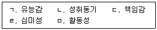
71. 성격평가질문지(PAI) 척도에 관한 설명으로 옳지 않은 것은?
72. 객관적 검사와 비교하여 투사 검사의 특성에 관한 설명으로 옳은 것을 모두 고른 것은?
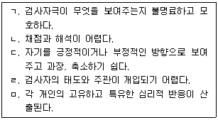
73. 문장완성검사에 관한 설명으로 옳지 않은 것은?
74. MMPI-2와 문장완성검사(SCT)에 관한 설명으로 옳은 것은?
75. 엑스너(Exner)의 로샤(Rorschach) 검사 종합체계에서 결정인 채점기호가 아닌 것은?
4과목: 상담이론
76. 상담에 관한 설명으로 옳지 않은 것은?
77. 상담관계에 관한 설명으로 옳지 않은 것은?
78. 비밀유지 원칙의 예외 상황으로 옳은 것을 모두 고른 것은?
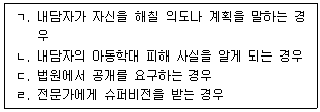
79. 다음 설명에 해당하는 개인심리학적 상담기법은?
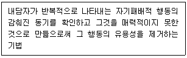
80. 인지오류의 유형과 예시의 연결이 옳은 것을 모두 고른 것은?
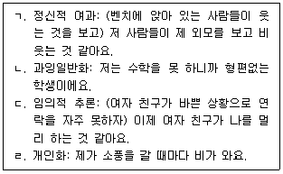
81. 합리정서행동치료(REBT)의 ABCDE 모델에서 B에 해당하는 것은?
82. 정신분석에 관한 설명으로 옳지 않은 것은?
83. 행동주의 상담에 관한 설명으로 옳은 것을 모두 고른 것은?
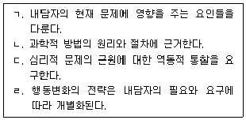
84. 다음에서 설명하는 게슈탈트 상담이론의 접촉경계 혼란 현상은?
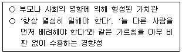
85. 게슈탈트 상담에 관한 설명으로 옳지 않은 것은?
86. 인간중심 상담이론에 관한 설명으로 옳지 않은 것은?
87. 다음 인간관에 기초한 상담이론은?
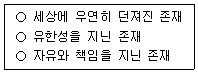
88. 다음 설명에 해당하는 상담이론은?
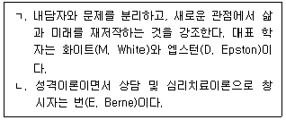
89. 현실치료에 관한 설명으로 옳은 것을 모두 고른 것은?
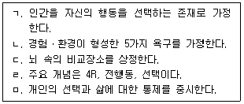
90. 해결중심상담에 관한 설명으로 옳지 않은 것은?
91. 상담이론과 설명의 연결로 옳은 것은?
92. 다음 사례개념화에 부합하는 상담이론은?
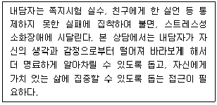
93. 변증법적 행동치료(DBT)에 관한 설명으로 옳은 것을 모두 고른 것은?
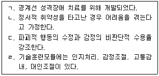
94. 통합적 접근에 관한 설명으로 옳지 않은 것은?
95. 여성주의 상담에 관한 설명으로 옳지 않은 것은?
96. 다문화 사회정의 및 옹호 상담자에 관한 설명으로 옳지 않은 것은?
97. 상담을 시작하기 전 준비해야 할 사항으로 옳은 것은?
98. 상담목표에 관한 설명으로 옳은 것을 모두 고른 것은?
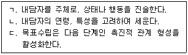
99. 호소문제에 관한 설명으로 옳은 것을 모두 고른 것은?
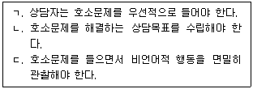
100. 상담자의 자기개방에 관한 설명으로 옳지 않은 것은?